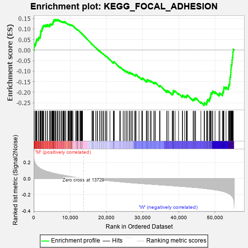
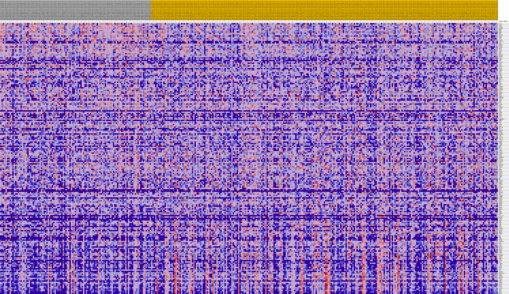
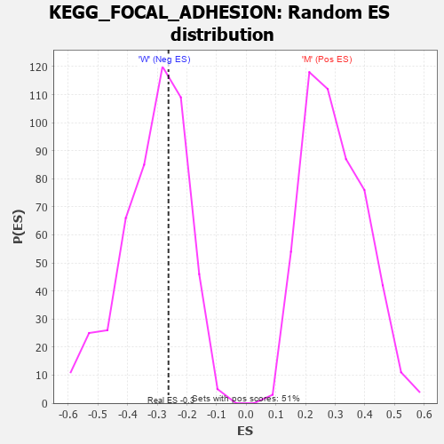

| Dataset | MUC16.MUC16.cls#M_versus_W.MUC16.cls#M_versus_W_repos |
| Phenotype | MUC16.cls#M_versus_W_repos |
| Upregulated in class | W |
| GeneSet | KEGG_FOCAL_ADHESION |
| Enrichment Score (ES) | -0.26235038 |
| Normalized Enrichment Score (NES) | -0.8404278 |
| Nominal p-value | 0.6369168 |
| FDR q-value | 1.0 |
| FWER p-Value | 0.999 |

| PROBE | DESCRIPTION (from dataset) | GENE SYMBOL | GENE_TITLE | RANK IN GENE LIST | RANK METRIC SCORE | RUNNING ES | CORE ENRICHMENT | |
|---|---|---|---|---|---|---|---|---|
| 1 | TLN2 | na | 83 | 0.235 | 0.0128 | No | ||
| 2 | ACTG1 | na | 124 | 0.226 | 0.0258 | No | ||
| 3 | ITGA6 | na | 446 | 0.183 | 0.0312 | No | ||
| 4 | DIAPH1 | na | 611 | 0.172 | 0.0387 | No | ||
| 5 | MAPK1 | na | 734 | 0.165 | 0.0465 | No | ||
| 6 | RHOA | na | 900 | 0.155 | 0.0529 | No | ||
| 7 | FLNB | na | 1283 | 0.139 | 0.0545 | No | ||
| 8 | CRK | na | 1385 | 0.135 | 0.0608 | No | ||
| 9 | MAP2K1 | na | 1733 | 0.124 | 0.0621 | No | ||
| 10 | ITGB7 | na | 1803 | 0.122 | 0.0683 | No | ||
| 11 | GRB2 | na | 1842 | 0.121 | 0.0749 | No | ||
| 12 | AKT1 | na | 1908 | 0.119 | 0.0810 | No | ||
| 13 | LAMB3 | na | 1938 | 0.118 | 0.0876 | No | ||
| 14 | COL11A1 | na | 2023 | 0.116 | 0.0931 | No | ||
| 15 | SPP1 | na | 2275 | 0.110 | 0.0953 | No | ||
| 16 | MAPK9 | na | 2291 | 0.110 | 0.1017 | No | ||
| 17 | MAPK8 | na | 2419 | 0.107 | 0.1059 | No | ||
| 18 | ITGB4 | na | 2567 | 0.104 | 0.1096 | No | ||
| 19 | BRAF | na | 2618 | 0.103 | 0.1149 | No | ||
| 20 | BCAR1 | na | 2797 | 0.100 | 0.1178 | No | ||
| 21 | VASP | na | 3276 | 0.092 | 0.1147 | No | ||
| 22 | CRKL | na | 3310 | 0.092 | 0.1197 | No | ||
| 23 | ROCK2 | na | 3753 | 0.085 | 0.1169 | No | ||
| 24 | PPP1CA | na | 3823 | 0.084 | 0.1208 | No | ||
| 25 | PPP1CC | na | 4388 | 0.077 | 0.1152 | No | ||
| 26 | EGFR | na | 4469 | 0.076 | 0.1183 | No | ||
| 27 | LAMA3 | na | 4492 | 0.075 | 0.1225 | No | ||
| 28 | EGF | na | 4744 | 0.072 | 0.1224 | No | ||
| 29 | COL5A3 | na | 4984 | 0.069 | 0.1222 | No | ||
| 30 | PAK3 | na | 5137 | 0.068 | 0.1236 | No | ||
| 31 | SOS1 | na | 5248 | 0.067 | 0.1257 | No | ||
| 32 | PARVB | na | 5286 | 0.066 | 0.1290 | No | ||
| 33 | VAV2 | na | 5369 | 0.065 | 0.1315 | No | ||
| 34 | VEGFD | na | 5440 | 0.065 | 0.1341 | No | ||
| 35 | ITGA3 | na | 5481 | 0.064 | 0.1373 | No | ||
| 36 | RAF1 | na | 5570 | 0.063 | 0.1396 | No | ||
| 37 | MYL5 | na | 5584 | 0.063 | 0.1431 | No | ||
| 38 | BIRC2 | na | 5880 | 0.060 | 0.1415 | No | ||
| 39 | LAMC2 | na | 5927 | 0.060 | 0.1442 | No | ||
| 40 | ACTN3 | na | 6128 | 0.057 | 0.1441 | No | ||
| 41 | MYLK2 | na | 6469 | 0.054 | 0.1412 | No | ||
| 42 | MYL12A | na | 6526 | 0.053 | 0.1434 | No | ||
| 43 | RAC2 | na | 6694 | 0.052 | 0.1435 | No | ||
| 44 | FN1 | na | 7057 | 0.049 | 0.1399 | No | ||
| 45 | LAMC3 | na | 7274 | 0.047 | 0.1389 | No | ||
| 46 | VAV1 | na | 7635 | 0.044 | 0.1350 | No | ||
| 47 | PIK3CG | na | 7764 | 0.043 | 0.1353 | No | ||
| 48 | ITGB8 | na | 8068 | 0.041 | 0.1323 | No | ||
| 49 | PIK3CB | na | 8139 | 0.040 | 0.1334 | No | ||
| 50 | PAK6 | na | 8272 | 0.039 | 0.1334 | No | ||
| 51 | ITGA2 | na | 8372 | 0.038 | 0.1339 | No | ||
| 52 | GSK3B | na | 8490 | 0.037 | 0.1340 | No | ||
| 53 | ELK1 | na | 8776 | 0.035 | 0.1310 | No | ||
| 54 | CCND2 | na | 8860 | 0.034 | 0.1315 | No | ||
| 55 | ARHGAP5 | na | 9449 | 0.029 | 0.1226 | No | ||
| 56 | COL5A2 | na | 9504 | 0.029 | 0.1234 | No | ||
| 57 | IBSP | na | 9655 | 0.028 | 0.1223 | No | ||
| 58 | PAK1 | na | 9813 | 0.026 | 0.1211 | No | ||
| 59 | PTK2 | na | 10001 | 0.025 | 0.1192 | No | ||
| 60 | ITGA4 | na | 10043 | 0.024 | 0.1199 | No | ||
| 61 | PXN | na | 10267 | 0.023 | 0.1173 | No | ||
| 62 | PIK3R3 | na | 10272 | 0.023 | 0.1186 | No | ||
| 63 | ACTB | na | 10388 | 0.022 | 0.1178 | No | ||
| 64 | AKT2 | na | 10469 | 0.021 | 0.1177 | No | ||
| 65 | VTN | na | 10515 | 0.021 | 0.1181 | No | ||
| 66 | CAPN2 | na | 10603 | 0.020 | 0.1178 | No | ||
| 67 | RAC3 | na | 10829 | 0.019 | 0.1148 | No | ||
| 68 | THBS2 | na | 11538 | 0.014 | 0.1028 | No | ||
| 69 | VAV3 | na | 11811 | 0.012 | 0.0986 | No | ||
| 70 | COL1A1 | na | 11916 | 0.012 | 0.0975 | No | ||
| 71 | ARHGAP35 | na | 11976 | 0.011 | 0.0971 | No | ||
| 72 | ERBB2 | na | 12005 | 0.011 | 0.0972 | No | ||
| 73 | SOS2 | na | 12058 | 0.011 | 0.0969 | No | ||
| 74 | CAV2 | na | 12165 | 0.010 | 0.0956 | No | ||
| 75 | PTEN | na | 12321 | 0.009 | 0.0933 | No | ||
| 76 | SHC1 | na | 12733 | 0.006 | 0.0863 | No | ||
| 77 | MYL12B | na | 12868 | 0.005 | 0.0841 | No | ||
| 78 | MYL2 | na | 12928 | 0.005 | 0.0834 | No | ||
| 79 | COL6A6 | na | 12954 | 0.005 | 0.0832 | No | ||
| 80 | MAPK3 | na | 13096 | 0.004 | 0.0809 | No | ||
| 81 | ACTN4 | na | 13204 | 0.003 | 0.0791 | No | ||
| 82 | RASGRF1 | na | 13311 | 0.003 | 0.0773 | No | ||
| 83 | PAK2 | na | 13346 | 0.002 | 0.0769 | No | ||
| 84 | COL6A1 | na | 13489 | 0.001 | 0.0744 | No | ||
| 85 | COL1A2 | na | 16049 | -0.005 | 0.0282 | No | ||
| 86 | ITGA10 | na | 16276 | -0.006 | 0.0245 | No | ||
| 87 | CDC42 | na | 16352 | -0.007 | 0.0236 | No | ||
| 88 | THBS1 | na | 16508 | -0.008 | 0.0212 | No | ||
| 89 | ITGB6 | na | 17054 | -0.011 | 0.0120 | No | ||
| 90 | CCND1 | na | 17466 | -0.013 | 0.0053 | No | ||
| 91 | TNR | na | 17567 | -0.013 | 0.0043 | No | ||
| 92 | HRAS | na | 18142 | -0.016 | -0.0051 | No | ||
| 93 | CAV1 | na | 18163 | -0.016 | -0.0045 | No | ||
| 94 | PARVG | na | 18612 | -0.019 | -0.0115 | No | ||
| 95 | ITGAV | na | 18634 | -0.019 | -0.0107 | No | ||
| 96 | PIK3R2 | na | 19058 | -0.021 | -0.0172 | No | ||
| 97 | PAK4 | na | 19239 | -0.022 | -0.0191 | No | ||
| 98 | ITGB1 | na | 19692 | -0.024 | -0.0259 | No | ||
| 99 | RAPGEF1 | na | 19953 | -0.025 | -0.0291 | No | ||
| 100 | COL3A1 | na | 20204 | -0.026 | -0.0320 | No | ||
| 101 | PIK3CD | na | 21039 | -0.030 | -0.0454 | No | ||
| 102 | COL4A4 | na | 21964 | -0.034 | -0.0601 | No | ||
| 103 | RAC1 | na | 21990 | -0.034 | -0.0585 | No | ||
| 104 | ITGA11 | na | 22015 | -0.034 | -0.0568 | No | ||
| 105 | PPP1CB | na | 22043 | -0.034 | -0.0552 | No | ||
| 106 | ITGB5 | na | 22239 | -0.035 | -0.0566 | No | ||
| 107 | ZYX | na | 23751 | -0.041 | -0.0816 | No | ||
| 108 | PRKCA | na | 23890 | -0.042 | -0.0815 | No | ||
| 109 | DOCK1 | na | 24675 | -0.045 | -0.0930 | No | ||
| 110 | LAMA5 | na | 25017 | -0.046 | -0.0964 | No | ||
| 111 | COL5A1 | na | 25470 | -0.048 | -0.1017 | No | ||
| 112 | BIRC3 | na | 25531 | -0.048 | -0.0999 | No | ||
| 113 | LAMB1 | na | 25902 | -0.050 | -0.1036 | No | ||
| 114 | SRC | na | 26365 | -0.051 | -0.1088 | No | ||
| 115 | MET | na | 26368 | -0.051 | -0.1058 | No | ||
| 116 | ITGA2B | na | 26652 | -0.052 | -0.1077 | No | ||
| 117 | LAMB2 | na | 27029 | -0.054 | -0.1113 | No | ||
| 118 | PDGFA | na | 27255 | -0.055 | -0.1120 | No | ||
| 119 | COL6A3 | na | 27805 | -0.057 | -0.1186 | No | ||
| 120 | VWF | na | 28070 | -0.058 | -0.1199 | No | ||
| 121 | PIK3R5 | na | 28119 | -0.058 | -0.1172 | No | ||
| 122 | XIAP | na | 28225 | -0.058 | -0.1156 | No | ||
| 123 | MYL7 | na | 29055 | -0.061 | -0.1269 | No | ||
| 124 | COL2A1 | na | 29811 | -0.063 | -0.1368 | No | ||
| 125 | PDGFRA | na | 29978 | -0.064 | -0.1359 | No | ||
| 126 | BAD | na | 30032 | -0.064 | -0.1330 | No | ||
| 127 | PIK3CA | na | 31062 | -0.067 | -0.1476 | No | ||
| 128 | CTNNB1 | na | 31234 | -0.068 | -0.1466 | No | ||
| 129 | COMP | na | 31266 | -0.068 | -0.1430 | No | ||
| 130 | COL4A1 | na | 31328 | -0.068 | -0.1400 | No | ||
| 131 | VEGFA | na | 31711 | -0.069 | -0.1427 | No | ||
| 132 | RAP1B | na | 32211 | -0.071 | -0.1474 | No | ||
| 133 | PDPK1 | na | 32429 | -0.072 | -0.1470 | No | ||
| 134 | MYLPF | na | 33098 | -0.074 | -0.1546 | No | ||
| 135 | CAV3 | na | 33393 | -0.075 | -0.1554 | No | ||
| 136 | PDGFC | na | 33556 | -0.075 | -0.1538 | No | ||
| 137 | IGF1R | na | 34711 | -0.079 | -0.1699 | No | ||
| 138 | PGF | na | 34866 | -0.079 | -0.1679 | No | ||
| 139 | SHC3 | na | 36692 | -0.085 | -0.1959 | No | ||
| 140 | CCND3 | na | 36806 | -0.085 | -0.1927 | No | ||
| 141 | BCL2 | na | 37223 | -0.086 | -0.1950 | No | ||
| 142 | COL11A2 | na | 38208 | -0.090 | -0.2075 | No | ||
| 143 | PDGFD | na | 38382 | -0.090 | -0.2051 | No | ||
| 144 | LAMA1 | na | 38466 | -0.090 | -0.2011 | No | ||
| 145 | RELN | na | 38503 | -0.091 | -0.1963 | No | ||
| 146 | JUN | na | 38564 | -0.091 | -0.1918 | No | ||
| 147 | ITGA5 | na | 39004 | -0.092 | -0.1942 | No | ||
| 148 | FYN | na | 39965 | -0.095 | -0.2058 | No | ||
| 149 | SHC2 | na | 40993 | -0.099 | -0.2184 | No | ||
| 150 | PAK5 | na | 41080 | -0.099 | -0.2140 | No | ||
| 151 | PIK3R1 | na | 41671 | -0.101 | -0.2185 | No | ||
| 152 | COL6A2 | na | 42115 | -0.103 | -0.2203 | No | ||
| 153 | PRKCG | na | 42215 | -0.103 | -0.2158 | No | ||
| 154 | ROCK1 | na | 42394 | -0.104 | -0.2127 | No | ||
| 155 | PDGFB | na | 43968 | -0.110 | -0.2346 | No | ||
| 156 | VCL | na | 44196 | -0.110 | -0.2320 | No | ||
| 157 | HGF | na | 44478 | -0.111 | -0.2303 | No | ||
| 158 | TNN | na | 44669 | -0.112 | -0.2270 | No | ||
| 159 | THBS4 | na | 46118 | -0.118 | -0.2461 | No | ||
| 160 | ITGA8 | na | 47015 | -0.122 | -0.2549 | Yes | ||
| 161 | PIP5K1C | na | 47123 | -0.123 | -0.2494 | Yes | ||
| 162 | KDR | na | 47734 | -0.126 | -0.2528 | Yes | ||
| 163 | FLT1 | na | 47756 | -0.126 | -0.2455 | Yes | ||
| 164 | LAMC1 | na | 47923 | -0.127 | -0.2407 | Yes | ||
| 165 | MYL10 | na | 48002 | -0.127 | -0.2344 | Yes | ||
| 166 | COL4A2 | na | 48467 | -0.130 | -0.2349 | Yes | ||
| 167 | MYLK3 | na | 48537 | -0.130 | -0.2282 | Yes | ||
| 168 | CHAD | na | 48722 | -0.132 | -0.2236 | Yes | ||
| 169 | ITGB3 | na | 48809 | -0.132 | -0.2171 | Yes | ||
| 170 | FLT4 | na | 48870 | -0.132 | -0.2101 | Yes | ||
| 171 | PDGFRB | na | 48945 | -0.133 | -0.2034 | Yes | ||
| 172 | TNXB | na | 49258 | -0.135 | -0.2009 | Yes | ||
| 173 | THBS3 | na | 49409 | -0.136 | -0.1954 | Yes | ||
| 174 | TLN1 | na | 50032 | -0.140 | -0.1981 | Yes | ||
| 175 | ACTN2 | na | 51112 | -0.148 | -0.2087 | Yes | ||
| 176 | TNC | na | 51358 | -0.150 | -0.2040 | Yes | ||
| 177 | LAMB4 | na | 52057 | -0.157 | -0.2071 | Yes | ||
| 178 | LAMA2 | na | 52158 | -0.159 | -0.1993 | Yes | ||
| 179 | AKT3 | na | 52341 | -0.161 | -0.1928 | Yes | ||
| 180 | PRKCB | na | 52433 | -0.162 | -0.1846 | Yes | ||
| 181 | IGF1 | na | 52481 | -0.163 | -0.1755 | Yes | ||
| 182 | ILK | na | 53065 | -0.171 | -0.1757 | Yes | ||
| 183 | COL4A6 | na | 53724 | -0.185 | -0.1764 | Yes | ||
| 184 | PPP1R12A | na | 53787 | -0.186 | -0.1662 | Yes | ||
| 185 | PARVA | na | 54001 | -0.192 | -0.1584 | Yes | ||
| 186 | VEGFC | na | 54098 | -0.194 | -0.1483 | Yes | ||
| 187 | MAPK10 | na | 54111 | -0.195 | -0.1367 | Yes | ||
| 188 | RAP1A | na | 54173 | -0.197 | -0.1259 | Yes | ||
| 189 | LAMA4 | na | 54342 | -0.202 | -0.1166 | Yes | ||
| 190 | FLNC | na | 54369 | -0.203 | -0.1048 | Yes | ||
| 191 | VEGFB | na | 54404 | -0.204 | -0.0930 | Yes | ||
| 192 | ACTN1 | na | 54464 | -0.207 | -0.0815 | Yes | ||
| 193 | FLNA | na | 54538 | -0.210 | -0.0700 | Yes | ||
| 194 | ITGA9 | na | 54702 | -0.218 | -0.0597 | Yes | ||
| 195 | ITGA1 | na | 54730 | -0.220 | -0.0468 | Yes | ||
| 196 | ITGA7 | na | 54800 | -0.224 | -0.0345 | Yes | ||
| 197 | SHC4 | na | 54912 | -0.230 | -0.0225 | Yes | ||
| 198 | MYL9 | na | 54945 | -0.232 | -0.0089 | Yes | ||
| 199 | MYLK | na | 55053 | -0.243 | 0.0039 | Yes |

